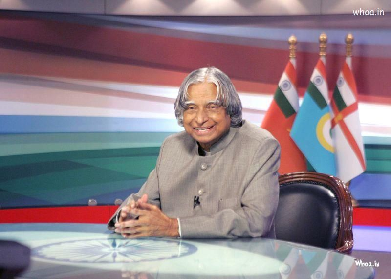
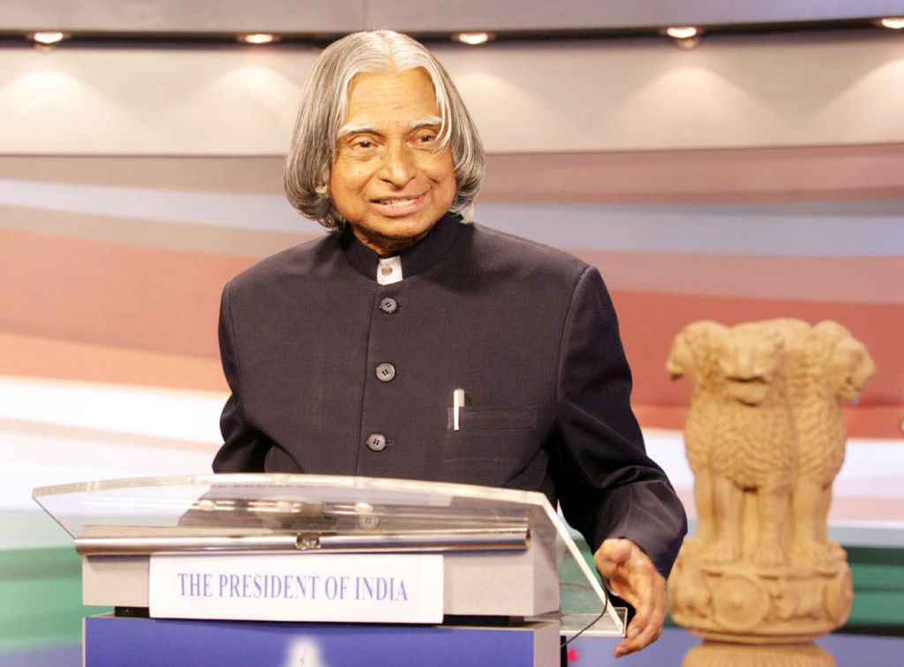
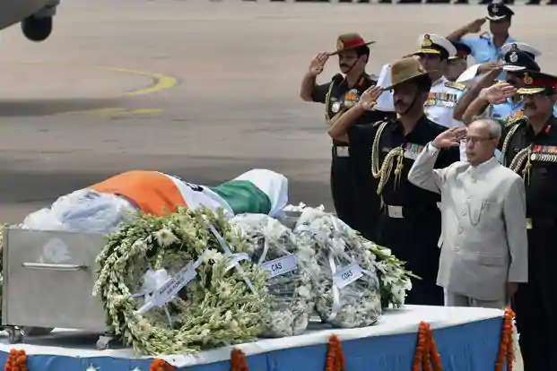
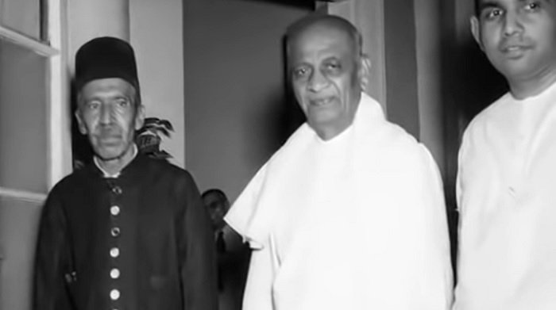
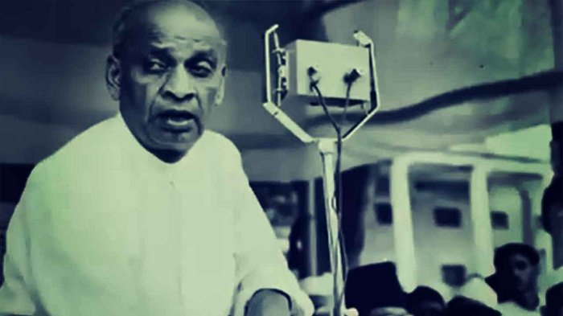
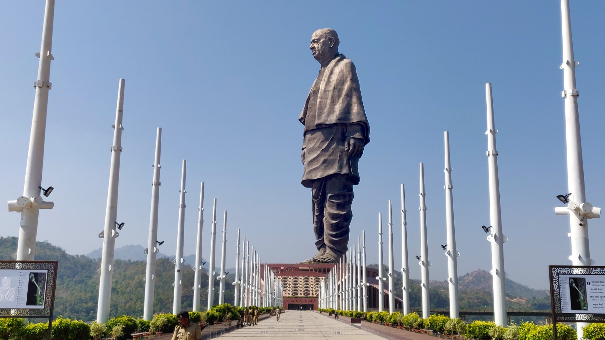

A.P.J. Abdul Kalam - The Missilie Man Of India

A.P.J. Abdul Kalam, in full Avul Pakir Jainulabdeen Abdul Kalam, (born October 15, 1931, Rameswaram, India—died July 27, 2015, Shillong), Indian scientist and politician who played a leading role in the development of India’s missile and nuclear weapons
programs. He was president of India from 2002 to 2007.
Kalam earned a degree in aeronautical engineering from the Madras Institute of Technology and in 1958 joined the Defence Research and Development Organisation (DRDO). He soon moved to the Indian Space Research Organisation, where
he was project director of the SLV-III, India’s first indigenously designed and produced satellite launch vehicle. Rejoining DRDO in 1982, Kalam planned the program that produced a number of successful missiles, which helped earned him the
nickname “Missile Man.”
.jpg)
From 1992 to 1997 Kalam was scientific adviser to the defense minister, and he later served as principal scientific adviser (1999–2001) to the government with the rank of cabinet minister. His prominent role in the country’s 1998 nuclear weapons
tests established Kalam as a national hero, although the tests caused great concern in the international community. In 1998 Kalam put forward a countrywide plan called Technology Vision 2020, which he described as a road map for transforming
India from a less-developed to a developed society in 20 years. The plan called for, among other measures, increasing agricultural productivity, emphasizing technology as a vehicle for economic growth, and widening access to health care and
education.
Dream is not that which you see while sleeping it is something that does not let you sleep." Raja Ramanna invited Abdul Kalam to witness the country's first nuclear test, Smiling Buddha, as the representative of TBRL, even though he had not participated
in its development. In the 1970s, Abdul Kalam directed two projects namely Project Devil and Project Valiant. Do you know about the Project Devil? It was an early liquid-fuelled missile project aimed at producing a short-range surface-to-air
missile. This project was not successful and discontinued in the 1980s and later it led to the development of the Prithvi missile. On the other hand Project Valiant aimed at the development of intercontinental ballistic missile. This was also
not successful. An Indian Ministry of Defence programme managed by DRDO in partnership with other government organisations launched the Integrated Guided Missile Development programme (IGMDP) in the early 1980s. Abdul Kalam was asked to lead
the project and in 1983 he returned to DRDO as Chief Executive of IGMDP in 1983. The programme led to the development of four projects namely Short range surface-to-surface missile (Prithvi), Short range low-level surface-to-air missile (Trishul),
Medium range surface-to-air missile (Akash) and Third-generation anti-tank missile (Nag). "The world today is integrally connected through four rapid connectivities. They are the environment, people, economy, and ideas." Under the leadership
of Abdul Kalam, the project of IGMDP proved to be successful by producing missiles like the first Prithvi missile in 1988 and then the Agni missile in 1989. Due to his contribution, he was known as "Missile Man of India." In 1992, he was appointed
as the Scientific Adviser to the Defence Minister. With the rank of a cabinet minister, in 1999, he was appointed as the Principal Scientific Adviser to the Government of India.
In 2002 India’s ruling National Democratic Alliance (NDA) put forward Kalam to succeed outgoing President Kocheril Raman Narayanan. Kalam was nominated by the Hindu nationalist (Hindutva) NDA even though he was Muslim, and his stature and popular appeal
were such that even the main opposition party, the Indian National Congress, also proposed his candidacy. Kalam easily won the election and was sworn in as India’s 11th president, a largely ceremonial post, in July 2002. He remained committed
to using science and technology to transform India into a developed country. In 2007 Kalam left office and was succeeded by Pratibha Patil, the country’s first woman president.
A.P.J. Abdul Kalam as a President of India (2002 to 2007)

- On 10 June 2002, the NDA government proposed Dr. A.P.J. Abdul Kalam's name for the presidential post to the Leader of Opposition, Congress President Sonia Gandhi. Dr. Abdul Kalam served as the President of India from 25 July 2002 to 25 July 2007. He
was the first scientist and the first bachelor to occupy the Rashtrapati Bhawan. "A Leader must have a 'Vision' for an organisation, 'Passion' to work for achieving the goals, 'Curiosity' to travel an unexplored path and ‘Courage' to take
decisions."
- Do you know that in the presidential election he got approx 922,884 votes and defeated Lakshmi Sehgal.
- He became the 11th President of India by succeeding K.R Narayanan. - He received the prestigious Bharat Ratna and became the
third President to receive the highest civilian honour after Dr. Sarvapali Radhakrishnan in 1954 Dr. Zakir Hussain in 1963.
- Dr. Abdul Kalam was also known as the People's President. - According to Dr. Kalam, the toughest decision taken
by him as the President was signing the bill of office of Profit.
- Over the course of his five-year term, he remained committed to his vision of transforming India into a developed nation. - He was however criticised for his inaction
to decide the fate of 20 mercy petitions out of 21, including that of the Kashmiri Terrorist Afzal Guru, who was convicted for the parliament attacks in December 2001. - He decided not to contest the Presidential election again in 2007 and
stepped down as the president on 25 July 2007.
A.P.J. Abdul Kalam: Post Presidency
- After leaving the office, Dr. Abdul Kalam chose the academic field and became a visiting professor at the Indian Institute of Management Shillong, the Indian Institute of Management Ahmedabad, the Indian Institute of Management Indore, an honorary fellow
of the Indian Institute of Science, Bangalore.
- He also served as the chancellor of the Indian Institute of Space Science and Technology Thiruvananthapuram, professor of Aerospace Engineering at Anna University, and an adjunct
at many other academic and research institutions across India. "When you speak, speak the truth; perform when you promise; discharge your trust... Withhold your hands from striking, and from taking that which is unlawful and bad."
- The
information technology was also taught by him at the International Institute of Information Technology, Hyderabad, and technology at Banaras Hindu University and Anna University.
- In 2011, he was criticised by civil groups over his stand
on Koodankulam Nuclear Power Plant as he had supported the establishment of the nuclear power plant and was accused of not speaking with the local people.
- 'What Can I Give Movement' a programme launched by Dr. Abdul Kalam for the youth
of India with a central theme of defeating corruption.
A.P.J. Abdul Kalam: Death

On 27 July 2015, Dr. Abdul Kalam was delivering a lecture at IIM Shillong where he suffered a heart attack and his condition became critical, so, he was shifted to Bethany Hospital where thereafter, he died of cardiac arrest. His last words, to
Srijan Pal Singh, were "Funny guy! Are you doing well?" "It is very easy to defeat someone, but it is very hard to win someone." On 30 July 2015, the former President was laid to rest at Rameshwaram's Pei Karumbu Ground with State honours.
Do you know that around 350,000 people attended the last ritual of Kalam, including the Prime Minister of India, the Governor of Tamil Nadu and the Chief Minister of Karnataka, Kerala, and Andhra Pradesh?
A.P.J. Abdul Kalam: Awards and Achievements
- In 1981, Dr. Kalam received Padma Bhushan from the Government of India.
- In 1990, Dr. Kalam received Padma Vibhushan from the Government of India.
- In 1994 and 1995, Distinguished Fellow and Honorary Fellow by Institute of Directors India and National Academy of Medical Sciences.
- In 1997, he had received Bharat Ratna from Government of India and Indira Gandhi Award for National Integration from the Indian National Congress.
- In 1998, Veer Savarkar Award from Government of India.
- In 2000, Ramanujan Award from Alwars Research Centre, Chennai.
- In 2007, he was honoured with the King Charles II Medal by the Royal Society, U.K., and Doctorate of Science from the University of Wolverhampton, UK.
- In 2008, he won the Hoover Medal given by ASME Foundation, USA and received Doctor of Engineering by Nanyang Technological University, Singapore.
APJ Abdul Kalam Awards
- In 2009, The California Institute of Technology, U.S.A, presented Kalam with the International von Karman Wings Award, Hoover Medal by ASME Foundation, USA and Honorary Doctorate by Oakland University.
- In 2010, Doctor of Engineering by University of Waterloo.
- In 2011, The IEEE honoured Kalam with IEEE Honorary Membership.
- In 2012, Doctor of Laws by Simon Fraser University.
- In 2013, Von Braun Award by the National Space Society.
- In 2014, Doctor of Science by the Edinburgh University, UK.
"Sometimes, it is better to bunk a class and enjoy with friends, because now, when I look back, marks never make me laugh, but memories do."
- Dr. Kalam was the recipient of honorary doctorates from 40 universities.
- Also, Dr. Kalam's 79th birthday was recognised as World Student's Day by the United Nations. He was also nominated for the MTV Youth Icon of the Year in 2003 and in 2006.
- Following his death, he received several tributes like the Tamil Nadu State Government on 15 October that is on his birthday announced to observe across the state as “Youth Renaissance Day”. Further, the State Government instituted
the Dr. A.P.J Abdul Kalam Award constituting an 8 gm gold medal, a certificate, and Rs 500,000.
- On Independence Day, from 2015, the award will be awarded annually to the residents of the state with the achievements in promoting scientific growth, the humanities, or the welfare of students.
- Not only this, on 15 October, 2015 the 84th anniversary of Kalam’s birth, Narendra Modi, the Prime Minister of India also released postage stamps commemorating Kalam at DRDO Bhawan in New Delhi.
- A new bacterium as the filters of the International Space Station (ISS) named it as Solibacillus Kalami to honour the late President Dr. Abdul Kalam was discovered by the Researchers at the NASA Jet Propulsion Laboratory.
Kalam wrote several books, including an autobiography, Wings of Fire (1999). Among his numerous awards were two of the country’s highest honours, the Padma Vibhushan (1990) and the Bharat Ratna (1997).
Sardar Vallabhbhai Patel - The Iron Man Of India

Vallabhbhai Patel was an Indian barrister, statesman and a prominent leader of the Indian Independence movement. Popularly known as Sardar Patel and The Ironman of India, he was the first Deputy Prime Minister and the first Home Minister of independent
India. After studying law in England, he practiced law in Ahmedabad. Initially not much interested in the independence movement, a meeting with Mahatma Gandhi in 1917 changed his views. Leaving his law-practice, Patel committed himself to
the Independence struggle. He received the title of Sardar (leader/Chief) after successfully leading the agitation of the farmers of Bardoli (1928). His greatest contribution to the post-independence India was the integration of 565 princely
states, and creation of All-India Services. In 1991, India’s highest civilian award, Bharat Ratna was conferred upon him posthumously.
Childhood & Early Life
Sardar Patel was born Vallabhbhai Jhaverbhai Patel in 1875, at Nadiad, Gujarat, British India, in a middle-class agricultural family of Lewa Patidar community. There is no official record of his date of birth, but October 31 is mentioned as his date of
birth on his matriculation exam papers. He was the fourth of six children of Jhaverbhai Patel and his wife, Laadbai. His father had participated in the 1857 Mutiny, in the army of Rani Laxmi of Jhansi. Growing up in a traditional Hindu family,
his early childhood was spent on family’s agricultural fields at Karamsad. By late teens, he completed his middle school education at Karamsad. In 1891, he was married to Jhaverba when he was 16. At 22, he completed his matriculation from
a high school in Nadiad/Petlad in 1897.
Patel aimed to work and collect necessary money to go to England to study law. After schooling, he studied by borrowing law books and passed the District Pleader’s examination. In 1900, he started his law practice at Godhra. He brought
his wife, Jhaverba, from her parent’s place, and together, they set up a home. They had two children: a daughter, Maniben (B.1904), and a son, Dahyabhai (b.1906). With his hard work and dedication, Patel became a capable lawyer. During a plague
epidemic, he contracted the disease while nursing a friend. Leaving his family, he went to Nadiad to recuperate. In 1902, Patel moved to Borsad (Kheda district) to practice law, where he successfully handled challenging court cases. With his
law practice, he saved enough money to go to England to study law. The ticket bore the name ‘V.J. Patel,’ which were also the initials of his elder brother, Vithalbhai Patel. After learning about his elder brother’s wish to study in England,
Vallabhbhai decided that his elder brother should go first, so as to maintain family’s reputation.

In 1909, Patel’s wife took seriously ill, and was operated upon in a hospital in Bombay/Mumbai. However, she didn’t recover from it. When she died, Patel was cross-examining in a court in Anand. He received a note bearing the news, read it, but
continued with his case without giving any indication till the end of the case. He did not marry again. At 36, Patel went to England (in 1910), to study law at the Middle Temple Inn. With his hard work, he not only completed the course months
earlier, but also achieved the top place in Roman law. Patel returned to India in February 1913, and established a successful practice at Ahmedabad. As an eminent barrister in criminal law, he led a westernized lifestyle. Known for his courteous,
well-mannered behavior, western clothes, and expertise in the game of bridge, he wasn’t interested in politics. However, a meeting with Mahatma Gandhi in 1917 changed his views. Inspired by Gandhi’s ideologies, Patel became his follower. In
1917, Patel was elected the sanitation commissioner of Ahmedabad.
.jpg)
Role in the Indian National Movement
Joining India’s independence movement, Patel motivated the people of Borsad in September 1917 to join Gandhi’s demand for independence. Patel joined the Indian National Congress’ Gujarat Sabha as secretary and helped in Gandhi’s campaigns.Kheda
district faced a plague epidemic in 1917, followed by a famine in 1918. Despite crop failures, the British government refused to exempt the land revenue. Patel led the agitation of the farmers and Zamindars to get tax exemption. During the
3-month long campaign, he came very close to Gandhi. Visiting several villages, he motivated farmers to revolt against the government without any violence by not paying taxes. Several farmers and volunteers were arrested, lands were seized
and people faced harassment, but the resistance effort paid off and the government was forced to exempt the taxes. In 1920, Patel was elected President of the Gujarat Pradesh Congress Committee (the post he served till 1945). Leaving his successful
legal practice, he joined Gandhi’s Non-Cooperation Movement in 1920. He and his children burned their western clothing in bon-fires organized to burn and boycott British goods. He started wearing Indian attire made of Khadi (Indian handloom
cotton). He traveled from place to place and recruited 3,00,000 members and collected a fund of Rs.1.5 million. In 1923, while Gandhi was in prison, Patel led the Satyagraha Movement in Nagpur, when the British banned hoisting of Indian flag.
He succeeded in obtaining the consent to hoist the flag publicly, and also got the prisoners released (arrested for hoisting the flag). From 1924-1928, Patel was chosen the President of the municipal committee of Ahmedabad. During these years,
he implemented several sanitation, water supply, administration and town planning programs. He also worked towards several social reforms, including prohibition of untouchability, casteism, alcoholism, etc.
In 1928, the government raised the land revenue at a time when the farmers in Bardoli taluka of Surat district were already facing famine. Patel toured the villages to gauge the condition. Before launching a Satyagraha, he forewarned
the villagers of the difficulties and asked them to maintain non-violence and unity. As per Patel’s call for a non-cooperation movement on February 12, 1928, the farmers refused to pay the taxes demanded by the government. The government responded
by arresting farmers and confiscating their lands, but the farmers didn’t give-in. Many Satyagrahas were undertaken all over Gujarat to express solidarity and sympathy with the Bardoli farmers. The agitation continued for 6 months, while Patel
carried on his negotiations with the government. His efforts bore fruit in August and the administration returned the seized lands and the implementation of increased tax was postponed. The success of the Bardoli Satyagraha earned him the
name Sardar or chief. In 1930, Gandhi gave the call for Dandi March and Salt Satyagraha to protest against the salt tax. As one of the leaders, Patel was arrested before the Dandi March on March 7, 1930. He was tried without any witnesses
or lawyers. After Gandhi’s arrest, the agitation intensified demanding release of the two leaders. Patel was released in June and took on the responsibilities as the Congress president in absence of Gandhi. However, he was arrested once again.

Patel was elected the President of the 46th session of the Indian National Congress at Karachi, in March 1931. Congress approved the Gandhi-Irwin Pact, though Nehru and Bose didn’t totally agree with the terms of the pact. The
same day, Bhagat Singh and associates were executed in Lahore. The Karachi session of the Congress coped with a lot of turmoil. Thereafter, the Indian National Congress agreed to participate in the Round Table Conference in London. However,
the Conference didn’t succeed and subsequently Gandhi, Patel and several other leaders were arrested. Patel was with Gandhi in Yerwada Jail from January 1931 to May 1933. When Gandhi protested against allocation of separate electorates for
untouchables by starting fast-unto-death, Patel looked after him. Later, he was shifted to Nasik Jail for one year, and was released in 1934. As per the Government of India Act 1935, the Congress decided to participate in the elctions to provincial
legislatures. Patel played an important role in raising funds and selecting candidates for these elections. The Indian National Congress won in 7 out of 11 provinces. As the chairman of the Congress Parliamentary Sub-committee, he guided the
ministries. At the start of WWII, the Viceroy declared India as an ally of England. The Congress ministries resigned in protest and leaders courted arrests. Gandhi gave call for Individual Civil Disobedience. After being arrested in November
1940, Patel was later released on August 29, 1941, due to ill-health. On August 8, 1942, the All India Congress Committee launched the Quit India Movement. Many prominent Congress leaders, including Patel, were arrested on August 9, 1942.
Patel was arrested and confined at the Ahmednagar Fort for 3 years. All Congress leaders were released in 1945, after the end of WWII.
Sardar Vallabhbhai Patel & the Partition of India
The British government called for negotiations with the Indian National Congress for the independence of India. The Muslim League leader Jinah’s separatist movement put a roadblock in front of the Congress leaders. Initially, Patel was against
the partition of India. However, he realized that these communal conflicts could lead to a weak government at the center, so he agreed for creating a separate dominion (based on religious preferences). Gandhi and other Congress leaders were
totally against partition. He discussed with Gandhi at private meetings, convinced him that the Congress-Muslim League alliance government would not work, and would lead to a civil war in the country. At the time of independence, the partition
of British India into India-Pakistan resulted in large-scale communal riots. Patel worked tirelessly to establish peace, and provide safety and essentials to the refugees. He went to border areas to organize relief and set up refugee camps.
He also called in the army (South Indian regiments) to bring the situation under control.
Contribution to Post-Independence
India Patel was the first Deputy Prime Minister and the first Home Minister of Independent India. British had given two choices to the Indian Princely states – they could either join India or Pakistan, or stay independent. This created a lot of
uncertainty. As the home minister, Patel had a herculean task to convince the princely states to join India. With his tactful negotiation, he succeeded in integrating over 560 states to the Indian Union. There were a few states like Junagadh,
Jammu & Kashmir, and Hyderabad, which did not acquiesce/comply. Without these states joining the Indian Union, the country would’ve been disjointed, so Patel used force to deal with them. Because of his efforts, today India stands as an integrated
nation. Image Credit: In September 1947, when Pakistan tried to invade Kashmir, Patel asked the rulers of Kashmir to accede to India, after which he ordered the army to drive away the invaders and re-claim the invaded territories. Patel was
the driving force behind creating the All India Services, which he knew would be essential for providing a firm infrastructure to the new nation. He was also an important part of the Constituent Assembly of India. The Somnath Temple in Saurashtra
was restored under his supervision.
Influence of Gandhi
Gandhi’s life and his principles had a huge effect on Patel’s life and ideologies. When Gandhi gave a call for the Non-cooperation Movement, Patel left his flourishing practice and dedicated himself to the independence struggle. He also supported and
followed Gandhi’s path of non-violence, and stood resolutely alongside Gandhi, even when other leaders did not agree with some of Gandhi’s ideas. Gandhi’s Civil Disobedience movement faced opposition, but Patel supported him. On Gandhi’s suggestion,
he took back his candidacy for the election of the president of the Indian National Congress, in 1946.

Death & Legacy
Patel suffered a heart-attack after Gandhi’s assassination in 1948. His health began to deteriorate in the latter half of 1950. In December, he was taken to Bombay. He had a second heart-attack, and died on December 15, 1950. In 1980, the Sardar Patel
National Memorial was opened at Moti Shahi Mahal, Ahmedabad. A major dam on River Narmada (Gujarat) was dedicated to him as Sardar Sarovar Dam. The international airport in Ahmedabad and several academic institutions are named after Patel.
He was posthumously awarded India’s highest civilian award, Bharat Ratna, in 1991. In 2014, it was announced that the nation would annually celebrate Patel’s birthday, October 31st, as Rashtriya Ekta Diwas or National Unity Day.
Statue of Unity
World’s tallest statue, the 182-meter (597 feet) tall Statue of Unity, was dedicated to him on October 31, 2018. It is approximately 3.2 km away from Sadhu Bet near Vadodara, Gujarat. The Statue of Unity and its related structures are spread over
an area of about 20000 square meters. Built at an approximate cost of 29.8 billion rupees ($425m), the entire complex is surrounded by an artificial lake.